第8回｜IOT製品製作
Assignment1
＊スケジュール
6／6 IOT製品を使って作るものを決める
6／13 今後のスケジュール確認 必要な材料集め
6／20 製作期間 （3Dプリンター使用 活動場所：FabLab）
6／27 製作期間 （前回の改善や方針に向けての検討）
7／4 プログラミング 新たに必要な材料の買い出し
7／11 プログラミング 配線や接続確認
7／16 プログラミング エラーなどの改善やプレゼンに向けて
7／18 最終発表
＊役割分担
ものづくり：小杉、チェセジョン、高梨
プログラミング：松本、栗田
※ものづくりが終わってもプログラミングへ手伝い
＊活動内容
6／6 IOT製品を使って作るものを決める
どんなIOT機能が良いか…
・センサー？
・ライト？ → 生活に役立つモノで面白さを加える！
・動きのあるもの？
6／13 今後のスケジュール確認 必要な材料集め
実際に何を作るのか…
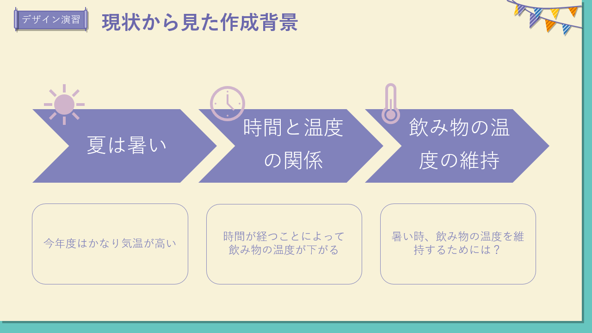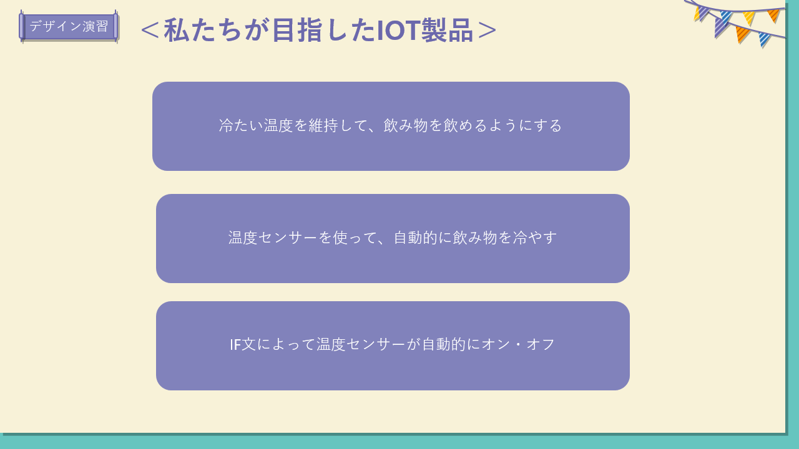.jpg.png) 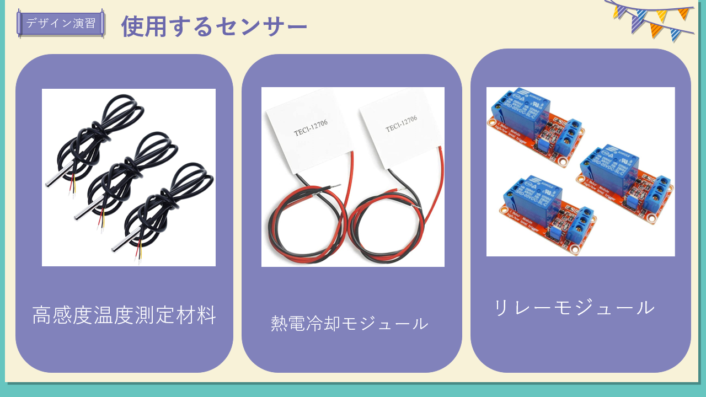
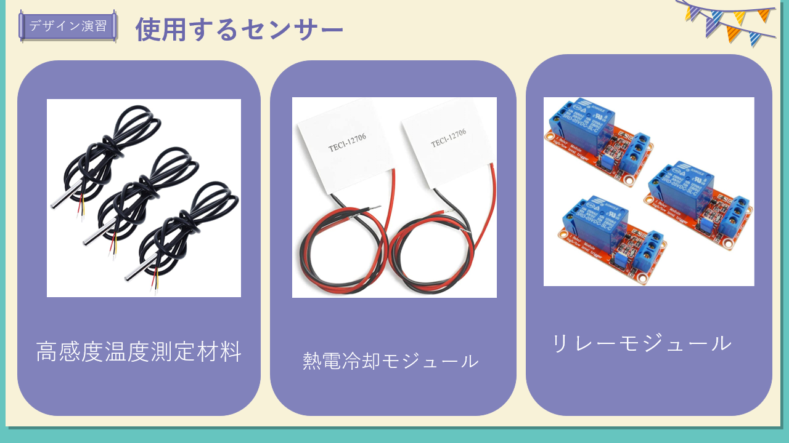
リレー回路を使ったIOT製品の方向で考えていく。
6／20 製作期間 （3Dプリンター使用 活動場所：FabLab）
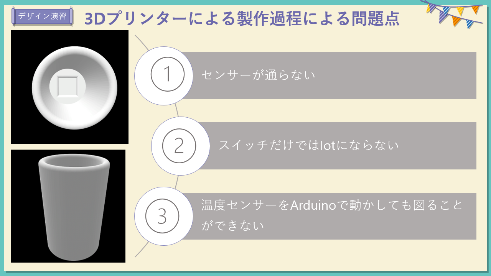
センサー通らず、ペットボトルを入れられることはできる・・課題が発生
どうしたら、製品に繋げられるかを話し合う。
6／27 製作期間 （前回の改善や方針に向けての検討）
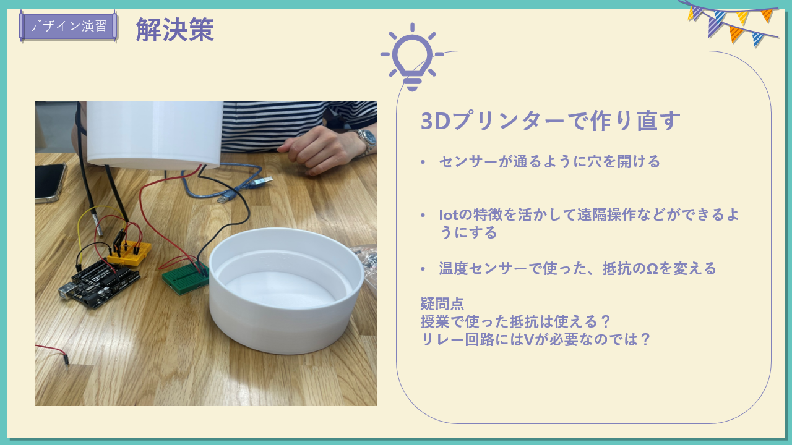 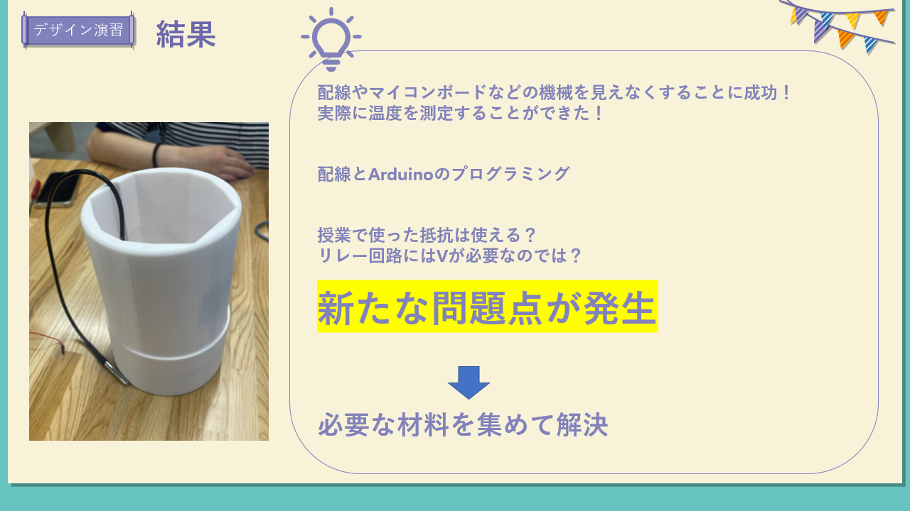
7／4 プログラミング 新たに必要な材料の買い出し
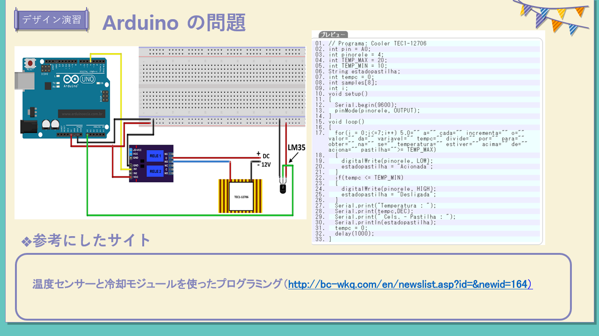
参考にするサイトで値の修正などを行う。電流や電圧、抵抗などの値の確認とArduinoの編集
7／11 プログラミング 配線や接続確認
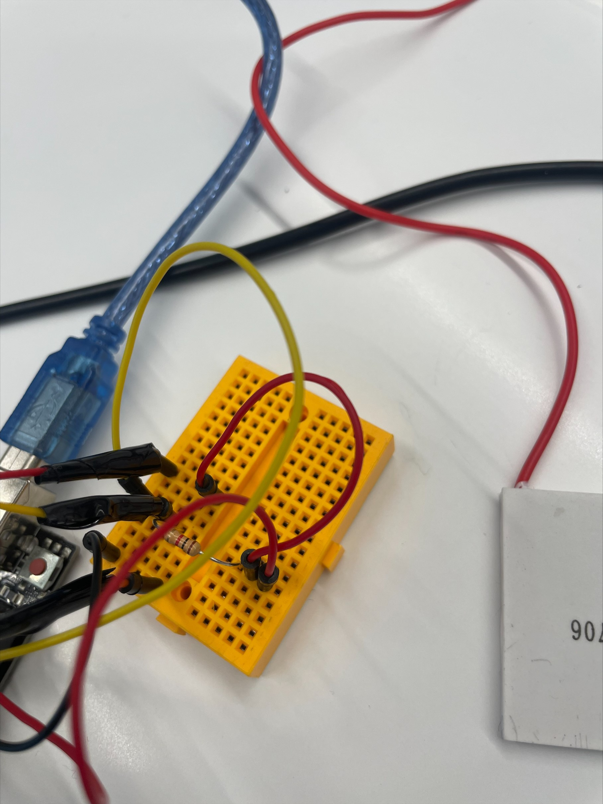 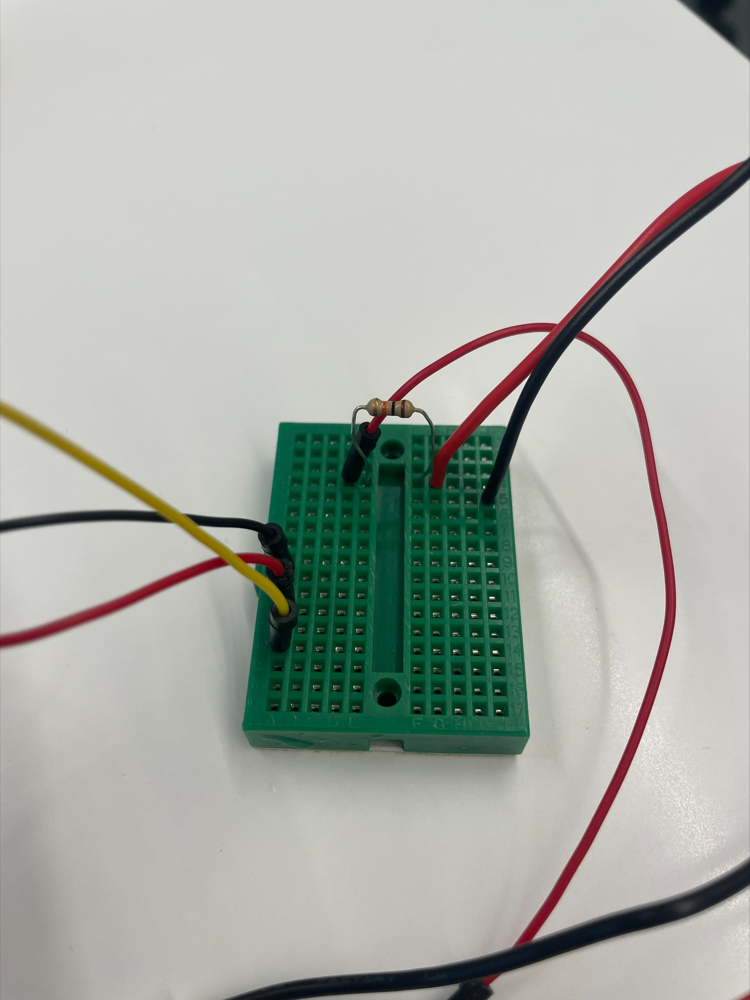
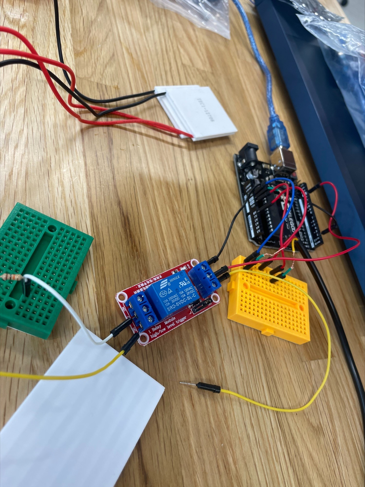 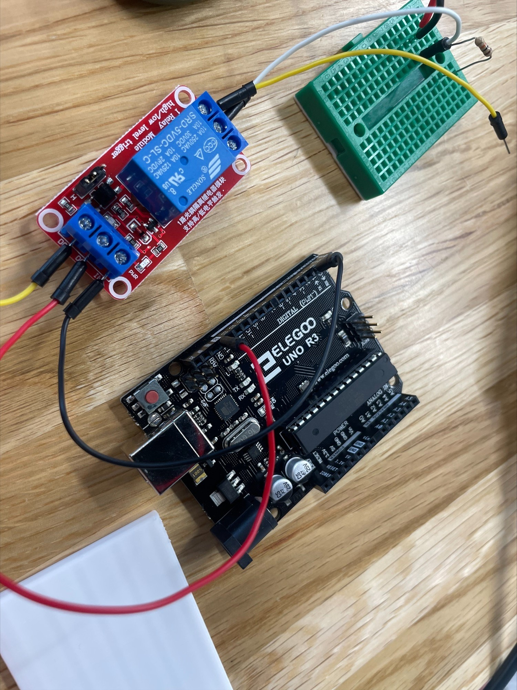
赤→電流 黄色→信号 黒→PNG
7／16 プログラミング エラーなどの改善やプレゼンに向けて
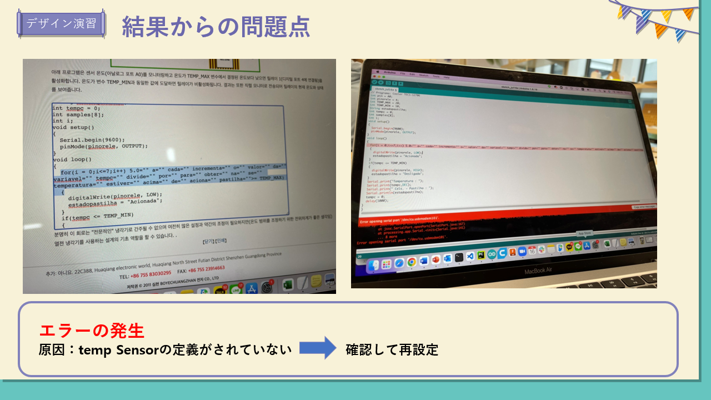
一度起きたエラーを直すと、再びセンサーが反応しない原因は？
確認しては実行の繰り返し
7／18 最終発表